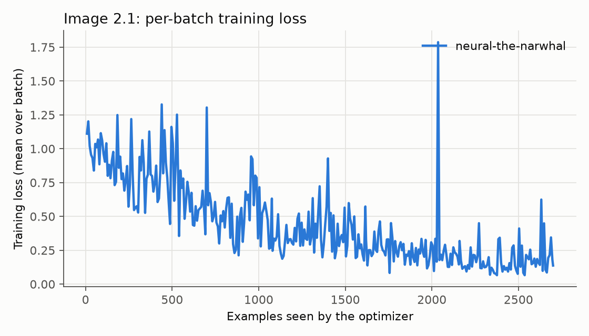
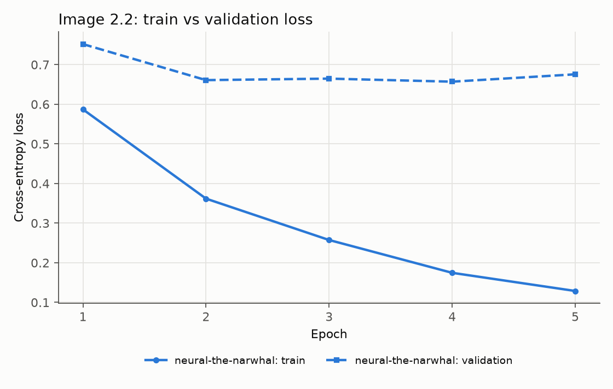
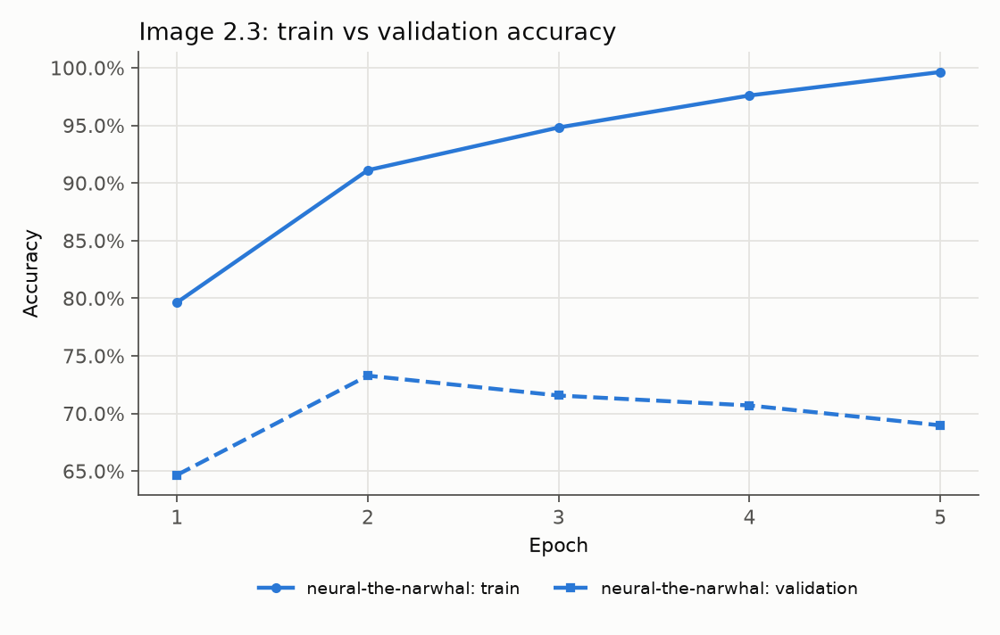
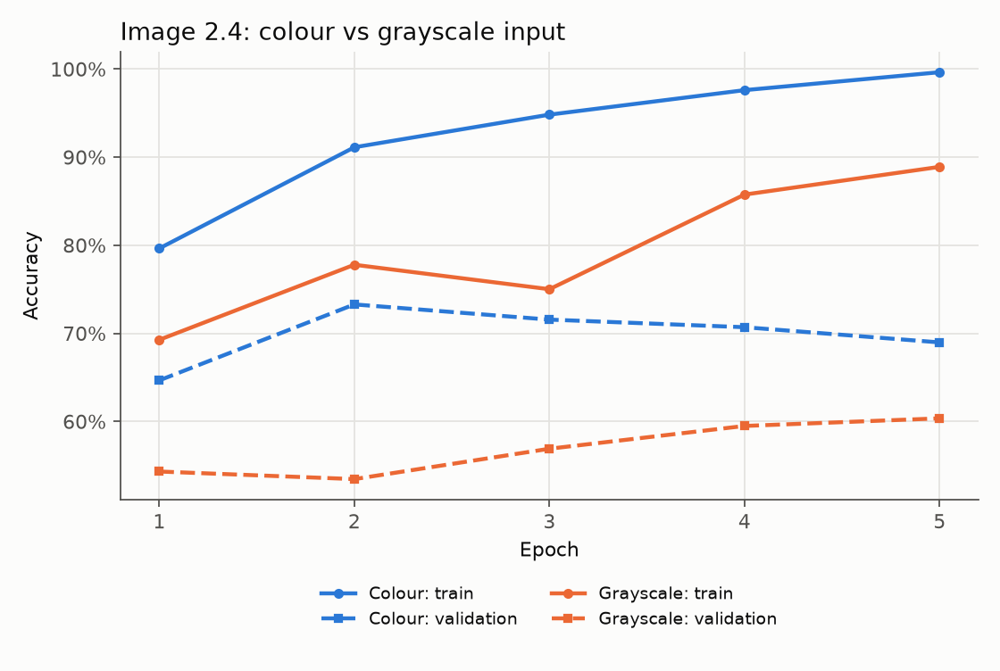
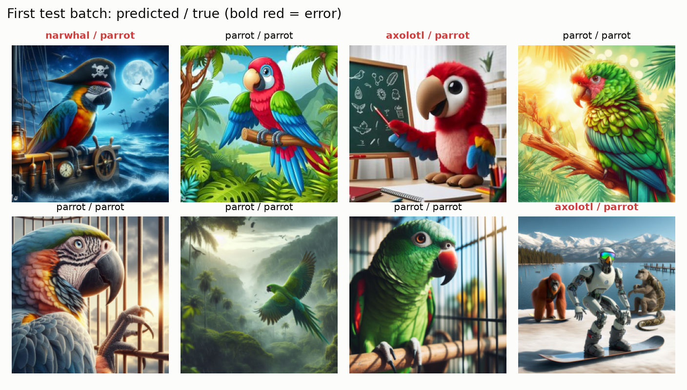
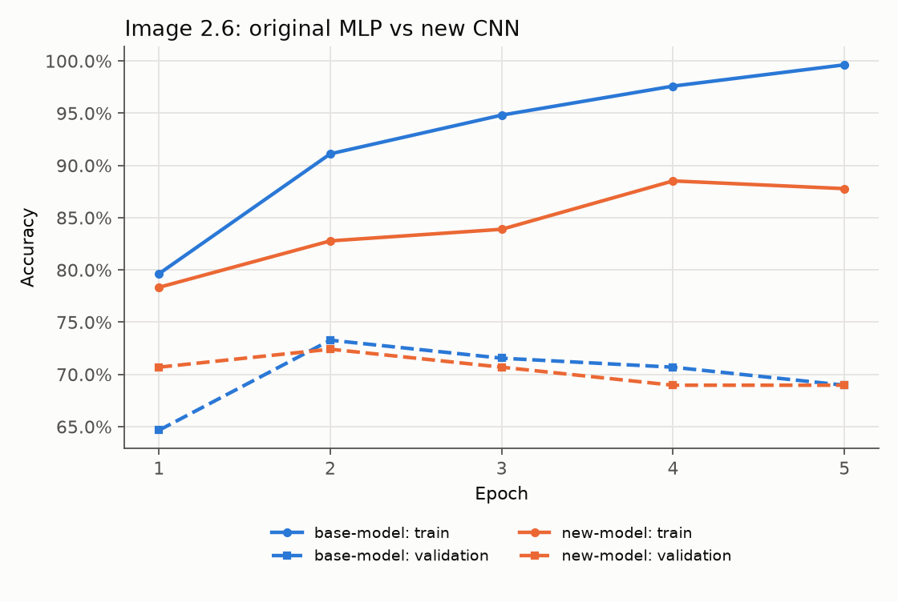
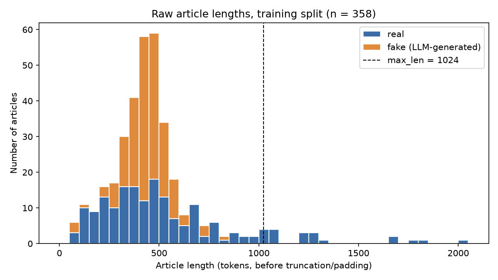
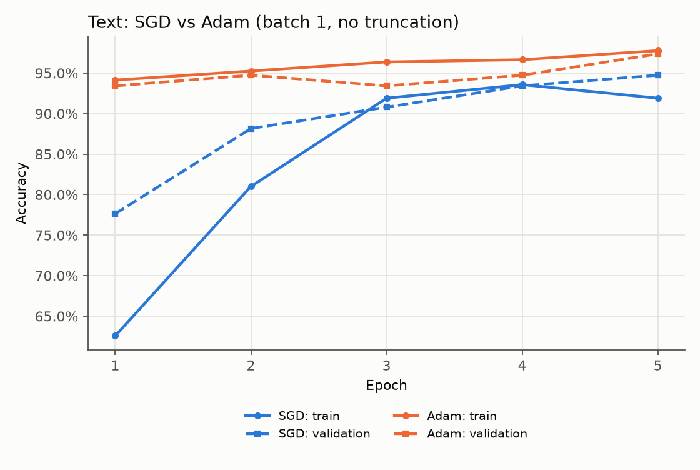
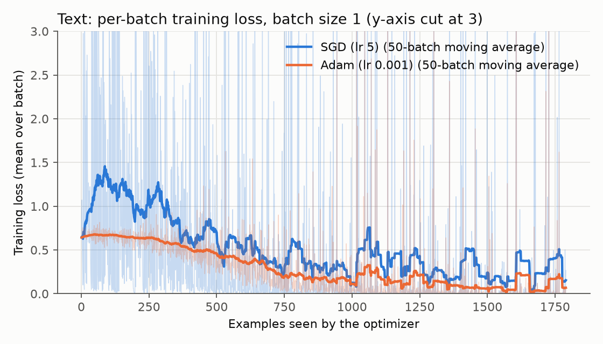
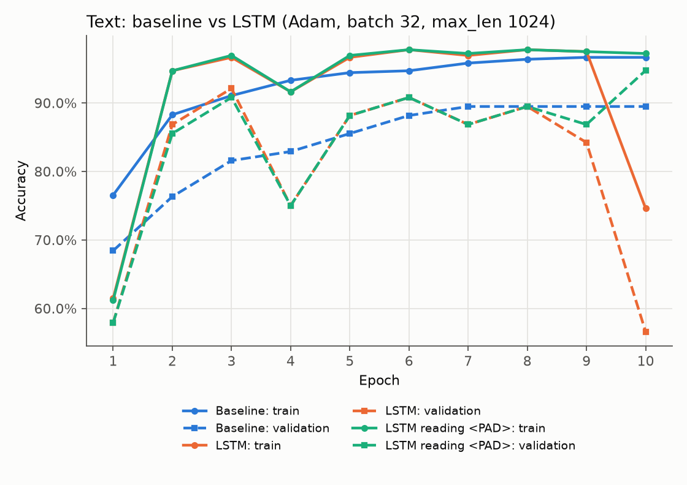

| GitHub repository | https://github.com/rabiya43/Assignment1 |
| Model checkpoints | GDRIVE_LINK |
| wandb (text) | https://forge.coreweave.com/wandb/rabiyatahir-/txt_classifier |
| wandb (image) | https://forge.coreweave.com/wandb/rabiyatahir-/img_classifier |
All runs were done on CPU (no GPU), seed 42. Every plot below was made from the metrics logged to
wandb for that run. The exact commands for every run are in run_txt_experiments.sh and
run_img_experiments.sh, and the console output of each run is in logs/.
When a tensor has requires_grad=True, PyTorch records every operation applied to it while the
forward pass runs, and builds a directed acyclic graph where each result remembers the function that made it
(grad_fn). Calling loss.backward() walks this graph backwards from the loss and applies the
chain rule at every node, so each parameter ends up with dLoss/dParameter stored in its .grad field.
The graph is rebuilt on every forward pass, so normal Python control flow (loops, if statements, variable
length inputs) is fine. This matters because training is just gradient descent on the loss, and our models have
from a few hundred thousand to 100 million parameters. Deriving and coding those derivatives by hand would be
slow and very easy to get wrong, and would have to be redone every time the model changes. With autograd,
swapping the MLP for a CNN or an LSTM needed no changes to the training loop at all.
Printed numbers disappear with the terminal and are hard to compare. wandb stores every logged value together with the run's hyperparameters, draws the curves automatically, and lets different runs be overlaid on the same plot. In this assignment that was very useful: the SGD vs Adam comparison and the baseline vs LSTM comparison are just a matter of selecting runs, and the Runs table gives the val/test accuracy of every run with its optimizer and batch size next to it. It also stores things that cannot be printed, like the captioned prediction images in 2.5, and keeps the whole history if a long run (the LSTM took 30 minutes) is interrupted.
Both work on the list of token ids after numericalization. TruncateToMaxLen keeps only the first
max_len tokens of an article, and PadToMaxLen appends the <PAD> id
(CorpusInfo.pad_idx = 1) until the article is exactly max_len long. They are only applied when
--max_len is a positive number. Articles have very different lengths (60 to 2016 tokens), and the collate
function builds a batch with torch.stack, which needs every tensor to have the same length. So padding is what
makes batch sizes above 1 possible, and truncation puts an upper limit on the length so a few very long articles
do not make every batch huge. Padding does not change what the baseline model sees because nn.EmbeddingBag
is created with padding_idx, so pad tokens are left out of the mean and never get a gradient.
With --max_len -1 neither transform is used, which only works with batch size 1.
Default settings for all runs: 5 epochs, batch size 8, SGD with learning rate 0.001.

The batch loss is very noisy because each batch has only 8 images, but it clearly goes down over the 5 epochs (2700 examples). In the last epoch most batches are below 0.2.


The model overfits quickly. Training accuracy goes from 79.6% to 99.6% and training loss keeps falling, but validation accuracy peaks at 73.3% after epoch 2 and then slowly drops to 69.0%, while validation loss stops improving after epoch 2. With about 100 million parameters and only 540 training images, the MLP can basically memorize the training set.
| Dataset | Image type | Accuracy |
|---|---|---|
| Test | Colour | 61.7% |
| Test | Grayscale | 57.4% |

2.4.b Not really. Removing colour only costs 4.3 points on test (61.7% to 57.4%, which is about 5 of the 115 test images) and about 9 points on validation, and the grayscale model is still far above the 33% you would get by guessing. So colour helps, but the model is also using things that survive in grayscale: brightness and layout of the scene (narwhals are often in dark, uniform underwater scenes, parrots in bright busy jungle scenes), and rough shapes. The grayscale model also learns more slowly (88.9% train accuracy after 5 epochs vs 99.6%), which fits with colour being an easy shortcut but not the only signal.

2.5.b The model got 5 of these 8 parrots right. The pirate parrot on a ship at night was called a narwhal: most of the picture is dark blue sea and sky, which is exactly what most narwhal images look like, and since the MLP looks at every pixel equally, the background outweighs the small bird. The stuffed toy parrot teaching at a whiteboard was called an axolotl. It is a cute, pink-red plush character in a human setting, and many axolotl images are cute pink cartoon characters doing human things (DJing, cooking, studying). The last one is a labelling problem more than a model problem: the prompt asked for "a robot parrot snowboarding ... with his other friends, orangutan and anaconda", but the generated image shows a humanoid robot with an orangutan and no parrot at all, so even a person could not get it right from the image. Overall the mistakes come from the scene and style (colours, background, cartoon look) rather than the animal itself.
| Dataset | Accuracy (original model) | Accuracy (new model) |
|---|---|---|
| Train | 99.6% | 87.8% |
| Test | 61.7% | 61.7% |

| Model | Parameters |
|---|---|
| Original model (MLP) | 100,928,003 |
| New model (CNN) | 472,323 |
For the MLP, the first layer alone is 196,608 x 512 + 512 = 100,663,808 parameters. For the CNN, most parameters
are in the final linear layer (131,072 x 3 + 3 = 393,219) and the two 1x1 convolutions (about 66k together). I used a
depthwise 7x7 convolution (groups=128) for the k=7 layer and a layer norm over the channels at each pixel,
like a ConvNeXt block.
2.6.d On the test set the two models came out exactly the same (61.7%, 71 of 115 images), and on validation they were also almost the same (best epoch 72.4% for the CNN vs 73.3% for the MLP, both ending at 69.0%). On the training set the new model is much worse (87.8% vs 99.6%). The main reason is size: the MLP has 214 times more parameters and treats every pixel separately, so it can memorize the 540 training images, which gives a big train/test gap (38 points). The CNN shares the same small filters over the whole image and averages over neighbouring pixels, so it cannot memorize as easily, and its gap is much smaller (26 points). It did not beat the MLP on test because 5 epochs of plain SGD with learning rate 0.001 is not enough for it to learn useful filters. Its training loss was still falling when training stopped (0.40 to 0.37 in the last epoch), so it is more undertrained than overfitted. With only 115 test images, one image is 0.9%, so small differences here are not meaningful.

Lengths go from 60 to 2016 tokens with a median of 441. The distribution is skewed to the right, and only 19 articles
(5.3%) are longer than 1024 tokens, so max_len=1024 keeps almost all text. Interestingly, the long tail is
almost entirely real articles. The LLM-generated articles are much more uniform, mostly between 300 and 600 tokens, so
length on its own is already a weak hint about the label.
| Batch size | Max length | Runtime (seconds) | Test acc. |
|---|---|---|---|
| 1 | None | 16.52 | 93.2% |
| 1 | 1024 | 16.56 | 93.2% |
| 32 | 1024 | 4.94 | 83.8% |
Runtime is the time for 5 epochs of training plus evaluation (SGD, lr 5), not counting the time spent sending logs to
wandb. Padding to 1024 has almost no cost for batch size 1, because EmbeddingBag is so cheap that the
time is dominated by the per-step overhead (Python loop, backward call, optimizer step), not by the number of tokens.
Batch size 32 is about 3.3 times faster because there are only 12 steps per epoch instead of 358. The catch is that
with the same learning rate and number of epochs, 12 steps per epoch is far fewer updates, so accuracy drops to 83.8%.
3.2.b The error is:
RuntimeError: stack expects each tensor to be equal size, but got [140] at entry 0 and [517] at entry 1
3.2.c With --max_len -1 no padding happens, so every article is a list with its own length. The
collate function (PadSequence) calls torch.stack on the 32 articles of a batch, and stack can
only join tensors of the same shape. Here the first article had 140 tokens and the second 517. With batch size 1 there is
only one article per batch, so nothing has to be stacked and it works. Padding every article to the same length (what
PadToMaxLen does) fixes it.
| Val. acc. | Test acc. | |
|---|---|---|
| SGD (lr 5) | 94.7% | 93.2% |
| Adam (lr 0.001) | 97.4% | 98.6% |
These are the starter settings (batch size 1, no truncation, 5 epochs). I also repeated the comparison with batch size 32 and max length 1024: SGD 85.5% val / 83.8% test, Adam 85.5% val / 91.9% test.


Adam is better on both splits and learns much faster: after the first epoch it is already at 93% validation accuracy, while SGD is at 78%. Its loss also ends lower (0.07 train loss vs 0.23). I think the main reason is the embedding table: it has 13,026 rows but each article only uses a few hundred words, so most rows get a gradient only now and then. SGD gives every parameter the same step size, so rare words barely move, while Adam scales the step for each parameter by its own gradient history, so rarely-updated words still get reasonably sized updates. The gradient clipping at 0.1 in the starter code also limits each SGD step, which hurts SGD more than Adam. From here on, Adam is used for everything.
3.4.a Model structure (embedding size 64, hidden size 64 per direction):
input: x_1 ... x_T token ids, T = 1024, real length L, positions L+1..T are <PAD> e_t = E[x_t] Embedding(13026, 64, padding_idx=pad), e_t in R^64 f_t = LSTM_fwd(e_t, f_(t-1)) forward direction, t = 1 .. L (packed) b_t = LSTM_bwd(e_t, b_(t+1)) backward direction, t = L .. 1 (packed) h_t = [f_t ; b_t] h_t in R^128 z = max_(t = 1..L) h_t element-wise max (AdaptiveMaxPool1d), pads masked logits = W Dropout_0.3(z) + b Linear(128, 2): real / fake parameters: 833,664 (embedding) + 66,560 (BiLSTM) + 258 (linear) = 900,482
The batch is packed with pack_padded_sequence so the LSTM never reads padding tokens, and padded
positions are set to -inf before max pooling so they can never be the maximum.
3.4.b Both models were trained with Adam, batch size 32, max length 1024 for 10 epochs. For each model I kept the weights from the epoch with the best validation accuracy and evaluated those on the test set (the test set was not used to choose anything).
| Val. acc. | Test acc. | |
|---|---|---|
| Original model | 89.5% | 93.2% |
| LSTM model | 92.1% | 93.2% |

The best epochs were epoch 7 for the baseline and epoch 3 for the LSTM. If I had just used the weights after the last epoch instead, the baseline would get 89.5% val / 94.6% test and the LSTM only 56.6% val / 60.8% test, because of the collapse described below.
3.4.c The LSTM fits the training data faster than the baseline: it reaches 94.7% training accuracy after 2 epochs (baseline 88.3%) and stays around 97 to 98% from epoch 5, while the baseline slowly climbs to 96.6%. On validation it is a different story. The baseline improves smoothly from 68% to 89.5% and then stays there. The LSTM gets the best single validation score (92.1% at epoch 3), but then jumps around a lot (75% at epoch 4, between 84% and 91% after that), and in epoch 10 training suddenly goes wrong: training accuracy drops from 97.5% to 74.6% and validation to 56.6%. I re-ran it with the same seed and got exactly the same collapse, so it is a real training instability and not random noise. On the test set the two best models are the same (93.2%, 69 of 74 articles), so overall the LSTM did not work better than the simple model, and it was about 140 times slower (1707 s vs 12 s for 10 epochs on CPU).
I think there are two main reasons. First, as discussed in 3.5, the label mostly depends on which words appear, which the averaged embeddings already capture perfectly well, so word order does not add much information. The LSTM has to learn the same thing through its recurrent state, with 66k extra parameters and only 358 training articles, which makes training noisier. Second, the sequences are very long (up to 1024 steps), and gradients through that many LSTM steps are hard to control. Max pooling helps here because every position has a direct path to the output.
Padding is a big deal for an LSTM in this setup. With max_len=1024 and a median article length of 441, more
than half of every padded sequence is <PAD>. If we used the last hidden state, the forward LSTM would
have read hundreds of pad tokens after the article ended, and the backward LSTM would read hundreds of pads before
reaching any real text, so the article content would be washed out. That is why my model packs the sequences (the LSTM
only runs over the real tokens) and masks the pad positions out of the max pool. To check how much this matters I trained
the same LSTM again but let it read the padding and pool over it (green curves in Figure 10). Surprisingly, it behaved
almost exactly the same for 9 epochs (training accuracy within 0.3 points every epoch). This makes sense with max pooling
and right padding: the forward direction gives exactly the same outputs at the real token positions either way, pad tokens
all have the same zero embedding so their outputs are nearly constant, and the max over time is picked by the strongest
activations, which come from real words. The only big difference is at epoch 10, where the padded version did not collapse
(94.7% val, 90.5% test). Since the two runs were identical up to that point, I do not think this shows that reading padding
is better; it shows how sensitive the LSTM training is, where a small difference in the computation decides whether the
unstable step happens. Getting a clear answer would need several seeds and probably a lower learning rate.
Reading through pairs, the fake articles have a very recognizable "LLM style". They are upbeat and generic, often end with a moral or a summary, and reuse the same vocabulary. Counting how many training articles contain each word shows this clearly: "reminder" appears in 38 fake articles and 0 real ones, "testament" 32 vs 2, "resilience" 23 vs 0, "underscores" 17 vs 1, "remarkable" 21 vs 0, and 8 fake articles even contain a "[Date]" placeholder. Real articles sound like reporting: they have specific numbers, days and months ("Saturday", "Jan", "four"), and reporting verbs like "told" (25 real vs 1 fake) and "said" (126 vs 43), because they quote real people. They also use typographic curly quotes and dashes much more often (about 90 real vs 12 fake), which comes from how news websites format text. So the label can be predicted almost entirely from which words appear, not from their order or from whether the facts are true. That is why a bag-of-words model that just averages word embeddings reaches 93 to 99%, and why the LSTM's ability to use word order does not add much here.
Yes. GitHub repository: https://github.com/rabiya43/Assignment1 (private, shared with the TA).
Google Drive model checkpoints: GDRIVE_LINK
5.1 No, I did not collaborate with anyone on this assignment.
5.2 The starter code was provided with the assignment (adapted from the CMU PyTorch Primer handout and the old
PyTorch text classification tutorial). Apart from that I only used the official documentation and tutorials linked in the
handout: the PyTorch "Learn the Basics" tutorials, the documentation for nn.Embedding, nn.EmbeddingBag,
nn.LSTM and pack_padded_sequence, and the wandb quickstart. I did not use any other code that
implements this assignment.
Use of AI tools. AI tools were used during this assignment to help with writing and debugging the code and to understand the concepts. I ran all the experiments myself, and the results reported here are from my own runs.